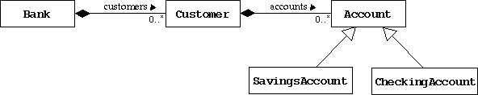

SL275: Module9: Text-Based Applications
Exercise #3: Use Collections to Represent Multiplicity
(Level 2)
Objective
In this exercise you will replace the arrays code that you used to implement
multiplicity in the relationships between bank and customer, and customer and
their accounts.
Directions
Start by changing your working directory to SL275/mod09/exercise3
on your computer. Copy the previous Banking project files.

Modify the Bank Class
Modify the Bank class to use an ArrayList to
implement the multiplicty on the customers association. Don't forget
to import the necessary java.util classes.
- Modify the declaration for the customers attribute to be
of type List and drop the numberOfCustomers attribute.
- Modify the Bank constructor to initialize the customers
attribute to be a new ArrayList object.
- Modify the addCustomer method to use the add method.
- Modify the getCustomer method to use the get method.
- Modify the getNumOfCustomers method to use the size method.
Modify the Customer Class
Modify the Customer class to use an ArrayList to
implement the multiplicty on the accounts association. Perform the same
modifications as above.
Compile and Run the TestBanking Program
At this point there is no need to modify the CustomerReport code,
because we have not altered the interface of the Bank and Customer
classes. Compile and run the TestBanking program and you should see
the same output as before.
Optional: Modify the CustomerReport Class
Modify the CustomerReport class to use an ArrayList to
implement the multiplicty on the accounts association. Perform the same
modifications as above.
- In the Bank class, add a method called getCustomers
that returns an Iterator on the customers list.
- In the Customer class, add a method called getAccounts
that returns an Iterator on the accounts list.
- Modify the CustomerReport class to use a pair of nested
while loops that iterate over the customer's iterator and
the account's iterator; instead of using the nested for loops.